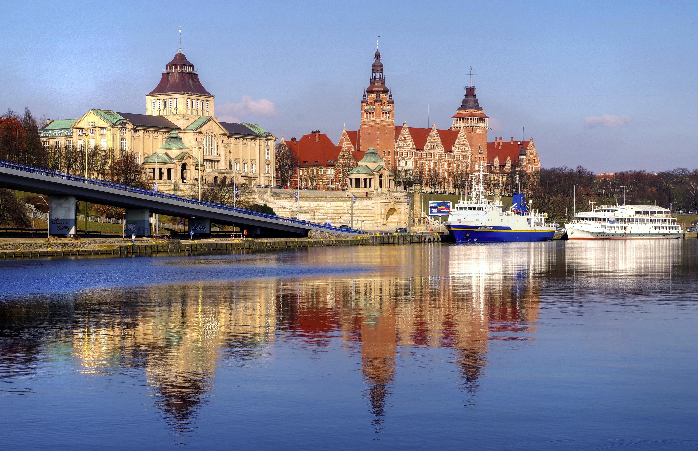
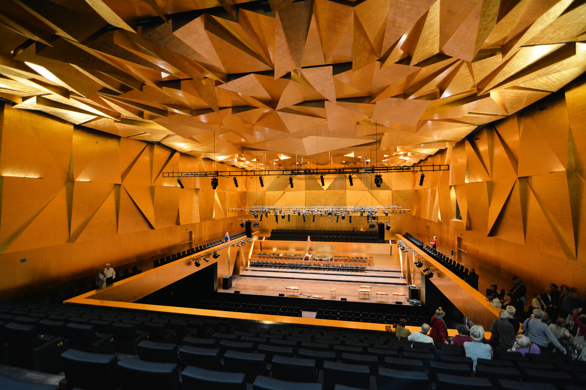

View Profile for İstanbul, Turkey
| SZCZECIN: The City of the Gryf | |
|---|---|
| Location (Country, Region) | Poland, West Pomeranian Voivodeship |
| Position (Coordinates) | 53.4285° N, 14.5528° E |
| Population | Approx. 400,000 (Major seaport and academic center) |
|
  |
|
| Short Description | I present Szczecin because it is my current location and an important city for my upcoming Erasmus studies. It is a vibrant port city known for its star-shaped street layout and the stunning architecture of the Wały Chrobrego, linking it to the Baltic Sea. |
| Official Website | Szczecin Official Tourist Website |